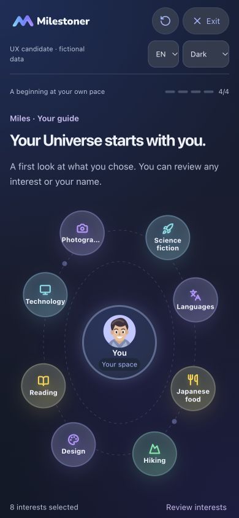
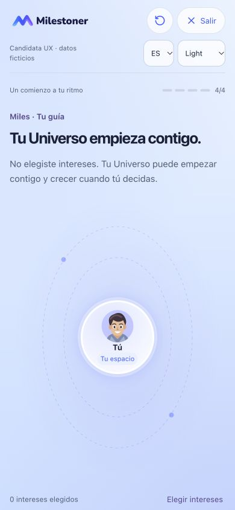
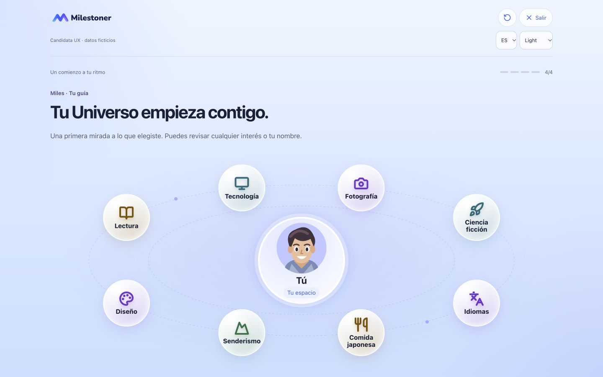
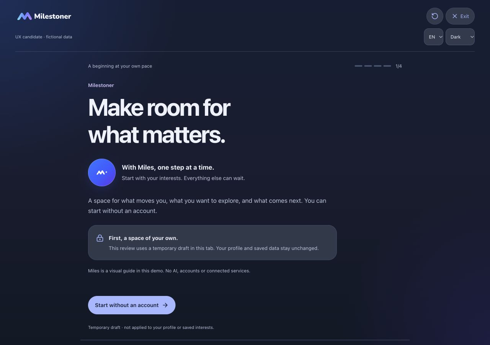

PENDING OWNER VISUAL AND FUNCTIONAL REVIEW. Candidata interactiva aislada: Bienvenida → nombre opcional → intereses → Universo. Publicar no implica aceptación final. Solo datos ficticios.
Sin nombre se muestra Tú/You. Ningún interés viene elegido: todos los seleccionados parten de Curious, regla de esta candidata Web. No crea perfiles, proyectos, hitos ni cuentas. El Perfil y Universo guardados no se modifican. Se reutilizan marca, avatar y geometría orbital aprobados.
El borrador pertenece a la sesión de esta pestaña. Los enlaces conservan las selecciones que hayas hecho en ella; abrir Universo en una sesión nueva muestra el estado vacío. Reiniciar o descartar es explícito. Terminar conserva el borrador temporal para revisión. Los controles de accesibilidad están al final de la candidata.
Capturas reales de viewport: usa la candidata navegable y el scroll para revisar el resto del contenido. Las referencias originales privadas no se publican.




Pendiente: aceptación visual/funcional de esta candidata. Primera creación, invitación de cuenta y continuación se revisarán en V2.5C.2. Sin autenticación real, Sync ni cambios nativos.